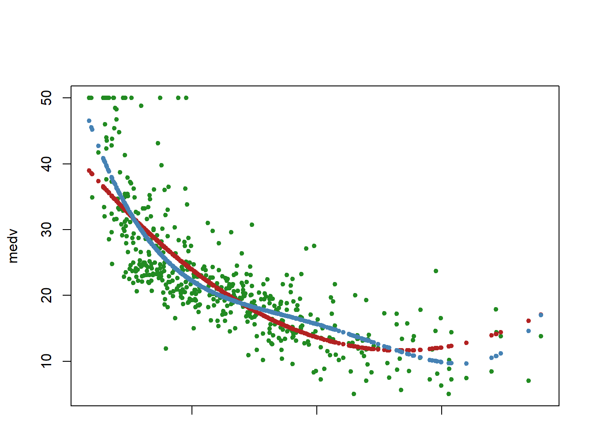
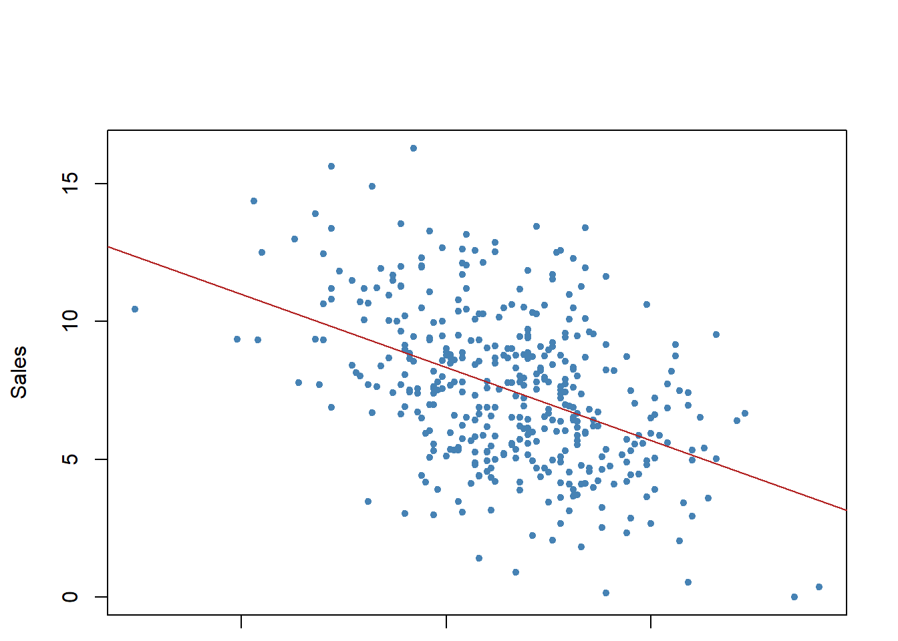

# Knowledge Mining: Linear regression
# File: Lab_linearregression01.R
# Theme: Linear regression
# Data: MASS, ISLR
# Adapted from ISLR Chapter 3 Lab
#install.packages(c("easypackages","MASS","ISLR","arm"))
library(easypackages)
libraries("arm","MASS","ISLR")
## Load datasets from MASS and ISLR packages
attach(Boston)
### Simple linear regression
names(Boston) [1] "crim" "zn" "indus" "chas" "nox" "rm" "age"
[8] "dis" "rad" "tax" "ptratio" "black" "lstat" "medv" # What is the Boston dataset?
#?Boston
plot(medv~lstat,Boston, pch=20, cex=.8, col="steelblue")
fit1=lm(medv~lstat,data=Boston)
fit1
Call:
lm(formula = medv ~ lstat, data = Boston)
Coefficients:
(Intercept) lstat
34.55 -0.95 summary(fit1)
Call:
lm(formula = medv ~ lstat, data = Boston)
Residuals:
Min 1Q Median 3Q Max
-15.168 -3.990 -1.318 2.034 24.500
Coefficients:
Estimate Std. Error t value Pr(>|t|)
(Intercept) 34.55384 0.56263 61.41 <2e-16 ***
lstat -0.95005 0.03873 -24.53 <2e-16 ***
---
Signif. codes: 0 '***' 0.001 '**' 0.01 '*' 0.05 '.' 0.1 ' ' 1
Residual standard error: 6.216 on 504 degrees of freedom
Multiple R-squared: 0.5441, Adjusted R-squared: 0.5432
F-statistic: 601.6 on 1 and 504 DF, p-value: < 2.2e-16abline(fit1,col="firebrick")
names(fit1) [1] "coefficients" "residuals" "effects" "rank"
[5] "fitted.values" "assign" "qr" "df.residual"
[9] "xlevels" "call" "terms" "model" confint(fit1) # confidence intervals 2.5 % 97.5 %
(Intercept) 33.448457 35.6592247
lstat -1.026148 -0.8739505# Predictions using values in lstat
predict(fit1,data.frame(lstat=c(0,5,10,15)),interval="confidence") # confidence intervals fit lwr upr
1 34.55384 33.44846 35.65922
2 29.80359 29.00741 30.59978
3 25.05335 24.47413 25.63256
4 20.30310 19.73159 20.87461predict(fit1,data.frame(lstat=c(0,5,10,15)),interval="prediction") # prediction intervals fit lwr upr
1 34.55384 22.291923 46.81576
2 29.80359 17.565675 42.04151
3 25.05335 12.827626 37.27907
4 20.30310 8.077742 32.52846# Prediction interval uses sample mean and takes into account the variability of the estimators for μ and σ.
# Therefore, the interval will be wider.
### Multiple linear regression
fit2=lm(medv~lstat+age,data=Boston)
summary(fit2)
Call:
lm(formula = medv ~ lstat + age, data = Boston)
Residuals:
Min 1Q Median 3Q Max
-15.981 -3.978 -1.283 1.968 23.158
Coefficients:
Estimate Std. Error t value Pr(>|t|)
(Intercept) 33.22276 0.73085 45.458 < 2e-16 ***
lstat -1.03207 0.04819 -21.416 < 2e-16 ***
age 0.03454 0.01223 2.826 0.00491 **
---
Signif. codes: 0 '***' 0.001 '**' 0.01 '*' 0.05 '.' 0.1 ' ' 1
Residual standard error: 6.173 on 503 degrees of freedom
Multiple R-squared: 0.5513, Adjusted R-squared: 0.5495
F-statistic: 309 on 2 and 503 DF, p-value: < 2.2e-16fit3=lm(medv~.,Boston)
summary(fit3)
Call:
lm(formula = medv ~ ., data = Boston)
Residuals:
Min 1Q Median 3Q Max
-15.595 -2.730 -0.518 1.777 26.199
Coefficients:
Estimate Std. Error t value Pr(>|t|)
(Intercept) 3.646e+01 5.103e+00 7.144 3.28e-12 ***
crim -1.080e-01 3.286e-02 -3.287 0.001087 **
zn 4.642e-02 1.373e-02 3.382 0.000778 ***
indus 2.056e-02 6.150e-02 0.334 0.738288
chas 2.687e+00 8.616e-01 3.118 0.001925 **
nox -1.777e+01 3.820e+00 -4.651 4.25e-06 ***
rm 3.810e+00 4.179e-01 9.116 < 2e-16 ***
age 6.922e-04 1.321e-02 0.052 0.958229
dis -1.476e+00 1.995e-01 -7.398 6.01e-13 ***
rad 3.060e-01 6.635e-02 4.613 5.07e-06 ***
tax -1.233e-02 3.760e-03 -3.280 0.001112 **
ptratio -9.527e-01 1.308e-01 -7.283 1.31e-12 ***
black 9.312e-03 2.686e-03 3.467 0.000573 ***
lstat -5.248e-01 5.072e-02 -10.347 < 2e-16 ***
---
Signif. codes: 0 '***' 0.001 '**' 0.01 '*' 0.05 '.' 0.1 ' ' 1
Residual standard error: 4.745 on 492 degrees of freedom
Multiple R-squared: 0.7406, Adjusted R-squared: 0.7338
F-statistic: 108.1 on 13 and 492 DF, p-value: < 2.2e-16par(mfrow=c(2,2))
plot(fit3,pch=20, cex=.8, col="steelblue")
mtext("fit3", side = 3, line = - 2, cex = 2, outer = TRUE)# Update function to re-specify the model, i.e. include all but age and indus variables
fit4=update(fit3,~.-age-indus)
summary(fit4)
Call:
lm(formula = medv ~ crim + zn + chas + nox + rm + dis + rad +
tax + ptratio + black + lstat, data = Boston)
Residuals:
Min 1Q Median 3Q Max
-15.5984 -2.7386 -0.5046 1.7273 26.2373
Coefficients:
Estimate Std. Error t value Pr(>|t|)
(Intercept) 36.341145 5.067492 7.171 2.73e-12 ***
crim -0.108413 0.032779 -3.307 0.001010 **
zn 0.045845 0.013523 3.390 0.000754 ***
chas 2.718716 0.854240 3.183 0.001551 **
nox -17.376023 3.535243 -4.915 1.21e-06 ***
rm 3.801579 0.406316 9.356 < 2e-16 ***
dis -1.492711 0.185731 -8.037 6.84e-15 ***
rad 0.299608 0.063402 4.726 3.00e-06 ***
tax -0.011778 0.003372 -3.493 0.000521 ***
ptratio -0.946525 0.129066 -7.334 9.24e-13 ***
black 0.009291 0.002674 3.475 0.000557 ***
lstat -0.522553 0.047424 -11.019 < 2e-16 ***
---
Signif. codes: 0 '***' 0.001 '**' 0.01 '*' 0.05 '.' 0.1 ' ' 1
Residual standard error: 4.736 on 494 degrees of freedom
Multiple R-squared: 0.7406, Adjusted R-squared: 0.7348
F-statistic: 128.2 on 11 and 494 DF, p-value: < 2.2e-16# Set the next plot configuration
par(mfrow=c(2,2), main="fit4")
plot(fit4,pch=20, cex=.8, col="steelblue")
mtext("fit4", side = 3, line = - 2, cex = 2, outer = TRUE)# Uses coefplot to plot coefficients. Note the line at 0.
par(mfrow=c(1,1))
arm::coefplot(fit4)
### Nonlinear terms and Interactions
fit5=lm(medv~lstat*age,Boston) # include both variables and the interaction term x1:x2
summary(fit5)
Call:
lm(formula = medv ~ lstat * age, data = Boston)
Residuals:
Min 1Q Median 3Q Max
-15.806 -4.045 -1.333 2.085 27.552
Coefficients:
Estimate Std. Error t value Pr(>|t|)
(Intercept) 36.0885359 1.4698355 24.553 < 2e-16 ***
lstat -1.3921168 0.1674555 -8.313 8.78e-16 ***
age -0.0007209 0.0198792 -0.036 0.9711
lstat:age 0.0041560 0.0018518 2.244 0.0252 *
---
Signif. codes: 0 '***' 0.001 '**' 0.01 '*' 0.05 '.' 0.1 ' ' 1
Residual standard error: 6.149 on 502 degrees of freedom
Multiple R-squared: 0.5557, Adjusted R-squared: 0.5531
F-statistic: 209.3 on 3 and 502 DF, p-value: < 2.2e-16## I() identity function for squared term to interpret as-is
## Combine two command lines with semicolon
fit6=lm(medv~lstat +I(lstat^2),Boston); summary(fit6)
Call:
lm(formula = medv ~ lstat + I(lstat^2), data = Boston)
Residuals:
Min 1Q Median 3Q Max
-15.2834 -3.8313 -0.5295 2.3095 25.4148
Coefficients:
Estimate Std. Error t value Pr(>|t|)
(Intercept) 42.862007 0.872084 49.15 <2e-16 ***
lstat -2.332821 0.123803 -18.84 <2e-16 ***
I(lstat^2) 0.043547 0.003745 11.63 <2e-16 ***
---
Signif. codes: 0 '***' 0.001 '**' 0.01 '*' 0.05 '.' 0.1 ' ' 1
Residual standard error: 5.524 on 503 degrees of freedom
Multiple R-squared: 0.6407, Adjusted R-squared: 0.6393
F-statistic: 448.5 on 2 and 503 DF, p-value: < 2.2e-16par(mfrow=c(1,1))
plot(medv~lstat, pch=20, col="forestgreen")
points(lstat,fitted(fit6),col="firebrick",pch=20)
fit7=lm(medv~poly(lstat,4))
points(lstat,fitted(fit7),col="steelblue",pch=20)
###Qualitative predictors
names(Carseats) [1] "Sales" "CompPrice" "Income" "Advertising" "Population"
[6] "Price" "ShelveLoc" "Age" "Education" "Urban"
[11] "US" summary(Carseats) Sales CompPrice Income Advertising
Min. : 0.000 Min. : 77 Min. : 21.00 Min. : 0.000
1st Qu.: 5.390 1st Qu.:115 1st Qu.: 42.75 1st Qu.: 0.000
Median : 7.490 Median :125 Median : 69.00 Median : 5.000
Mean : 7.496 Mean :125 Mean : 68.66 Mean : 6.635
3rd Qu.: 9.320 3rd Qu.:135 3rd Qu.: 91.00 3rd Qu.:12.000
Max. :16.270 Max. :175 Max. :120.00 Max. :29.000
Population Price ShelveLoc Age Education
Min. : 10.0 Min. : 24.0 Bad : 96 Min. :25.00 Min. :10.0
1st Qu.:139.0 1st Qu.:100.0 Good : 85 1st Qu.:39.75 1st Qu.:12.0
Median :272.0 Median :117.0 Medium:219 Median :54.50 Median :14.0
Mean :264.8 Mean :115.8 Mean :53.32 Mean :13.9
3rd Qu.:398.5 3rd Qu.:131.0 3rd Qu.:66.00 3rd Qu.:16.0
Max. :509.0 Max. :191.0 Max. :80.00 Max. :18.0
Urban US
No :118 No :142
Yes:282 Yes:258
fit1=lm(Sales~.+Income:Advertising+Age:Price,Carseats) # add two interaction terms
summary(fit1)
Call:
lm(formula = Sales ~ . + Income:Advertising + Age:Price, data = Carseats)
Residuals:
Min 1Q Median 3Q Max
-2.9208 -0.7503 0.0177 0.6754 3.3413
Coefficients:
Estimate Std. Error t value Pr(>|t|)
(Intercept) 6.5755654 1.0087470 6.519 2.22e-10 ***
CompPrice 0.0929371 0.0041183 22.567 < 2e-16 ***
Income 0.0108940 0.0026044 4.183 3.57e-05 ***
Advertising 0.0702462 0.0226091 3.107 0.002030 **
Population 0.0001592 0.0003679 0.433 0.665330
Price -0.1008064 0.0074399 -13.549 < 2e-16 ***
ShelveLocGood 4.8486762 0.1528378 31.724 < 2e-16 ***
ShelveLocMedium 1.9532620 0.1257682 15.531 < 2e-16 ***
Age -0.0579466 0.0159506 -3.633 0.000318 ***
Education -0.0208525 0.0196131 -1.063 0.288361
UrbanYes 0.1401597 0.1124019 1.247 0.213171
USYes -0.1575571 0.1489234 -1.058 0.290729
Income:Advertising 0.0007510 0.0002784 2.698 0.007290 **
Price:Age 0.0001068 0.0001333 0.801 0.423812
---
Signif. codes: 0 '***' 0.001 '**' 0.01 '*' 0.05 '.' 0.1 ' ' 1
Residual standard error: 1.011 on 386 degrees of freedom
Multiple R-squared: 0.8761, Adjusted R-squared: 0.8719
F-statistic: 210 on 13 and 386 DF, p-value: < 2.2e-16attach(Carseats)
contrasts(Carseats$ShelveLoc) # what is contrasts function? Good Medium
Bad 0 0
Good 1 0
Medium 0 1#?contrasts
### Writing an R function to combine the lm, plot and abline functions to
### create a one step regression fit plot function
regplot=function(x,y){
fit=lm(y~x)
plot(x,y, pch=20)
abline(fit,col="firebrick")
}
attach(Carseats)
regplot(Price,Sales)
## Allow extra room for additional arguments/specifications
regplot=function(x,y,...){
fit=lm(y~x)
plot(x,y,...)
abline(fit,col="firebrick")
}
regplot(Price,Sales,xlab="Price",ylab="Sales",col="steelblue",pch=20)
## Additional note: try out the coefplot2 package to finetune the coefplots
##install.packages("coefplot2", repos="http://www.math.mcmaster.ca/bolker/R", type="source")
## library(coefplot2)
# Exercise
# Try other combination of interactive terms
# How to interpret interactive terms?
# Read: Brambor, T., Clark, W.R. and Golder, M., 2006. Understanding interaction models: Improving empirical analyses. Political analysis, 14(1), pp.63-82.
# What are qualitative variables? What class should they be?